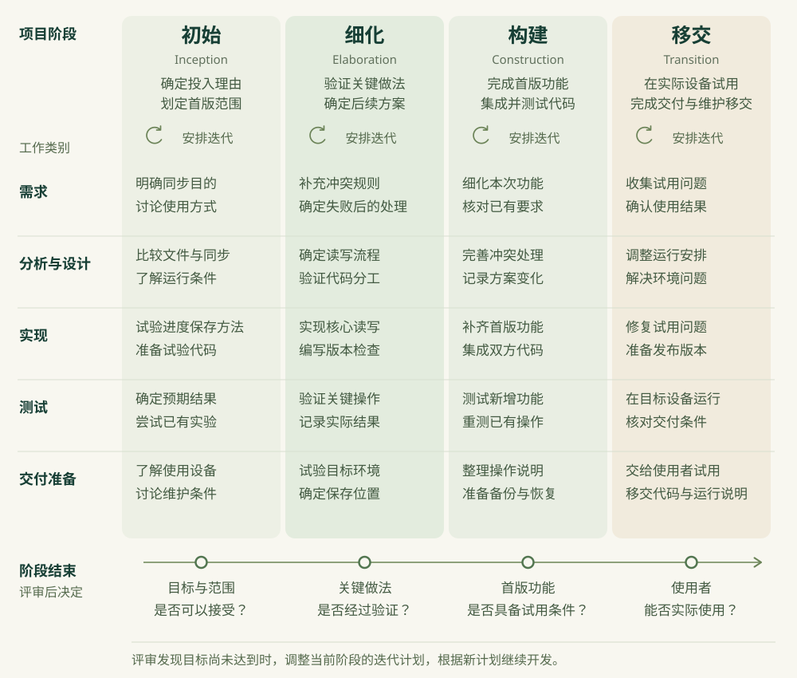

我们继续开发前面几节中的复习清单。使用者在这个网页里勾选已经复习过的内容，程序会保存完成状态，方便下次接着复习。上一节中，我们为设备间同步进度做了页面实验，比较了几种提交规则。实验数据保存在当前页面的内存中，刷新后就会恢复初始状态。因此，要让使用者在自己的电脑和手机之间同步，我们还需要增加服务端保存功能，让两台设备通过网络访问同一份进度。
假设我们与另一位开发者合作完成同步功能，由我们负责网页，合作者负责服务端。目前，我们已经知道旧进度可能覆盖新记录，准备继续验证版本检查。不过，网页怎样配合服务端，还取决于双方采用的数据格式和提交规则。如果我们把同步页面全部写完以后，才发现服务端需要另一种提交方式，就可能要回头修改已经写好的页面。
为了安排后续开发，首先我们需要确定需要解决的问题。
- 使用者希望怎样同步？例如，他是否愿意在需要同步时手动点击按钮？确定这个范围以后，我们才能决定首版要完成哪些操作。
- 哪些做法还需要验证？例如，版本比较与写入能否在服务端正确配合？这会影响我们能否继续沿用当前的数据提交方案。
- 准备交付时，需要满足什么条件？例如，使用者能否在自己的两台设备上完成同步，出错以后能否知道哪些修改尚未保存？我们需要据此安排测试与试用。
统一过程（Unified Process，UP）把项目划分为不同阶段，根据阶段目标安排迭代。开发者在每次迭代中实现和验证一部分功能，并根据实际结果决定后续工作。它还强调根据使用者要完成的任务确定功能，并尽早验证那些会影响后续实现的系统分工。这些做法通常概括为用例驱动、以架构为中心、迭代和增量。下面通过同步功能，具体说明用例与架构在这里指什么。
Rational Unified Process，通常简称 RUP，是由 Rational 发展起来的过程框架。它围绕统一过程的这些思想，对阶段、工作类别和职责等内容给出了详细指导。复习清单接下来的同步开发，可以结合这些指导安排。
用例描述使用者为了达到某个目标，与软件交互的过程。对于复习清单，我们可以把一个用例命名为“在手机上继续电脑上的复习”。使用者的目标是在手机上接着复习，因此手机需要读到电脑已经上传的进度。这个用例就围绕读取进度展开。
假设使用者已经在电脑上完成课堂笔记，并成功上传了进度。此时，他打开手机上的复习清单，点击读取共享进度。手机向服务端请求记录。服务端收到请求以后，返回电脑上传后的数据。手机收到这些数据，才更新页面中的条目状态。使用者看到课堂笔记已经完成，就可以继续复习其他内容。用例需要记录这段操作过程，让开发者知道程序应当怎样帮助使用者完成任务。
读取过程也可能失败。如果手机在请求期间断网，程序就要保留原来的本机进度，并提示读取没有成功。使用者恢复网络以后，可以重新尝试读取。
还有一种情况需要另外讨论：使用者已经在手机上完成了矿物识别，但这项修改尚未上传。此时读取共享进度，如果直接覆盖手机记录，就可能丢掉这项修改。因此，我们需要与使用者讨论怎样保留本机修改，并把确定的处理方式补进这个用例。
| 用例内容 | 在复习清单中怎样说明 | |
|---|---|---|
| 使用者的目标 | 在手机上接着复习，看到电脑刚保存的完成状态。 | |
| 开始条件 | 电脑已经成功上传进度。手机能够访问同步服务，当前没有尚未上传的修改。 | |
| 正常操作 | 使用者在手机上发起读取。程序取得共享进度，更新页面中的条目状态。 | |
| 成功结果 | 手机显示电脑上传后的进度，并记下读到的共享版本号，供后续提交使用。 | |
| 网络读取失败 | 保留手机原来的进度，显示读取失败的提示。使用者恢复网络后可以重试。 | |
| 手机已有未上传修改 | 例如，矿物识别已在手机上完成。读取共享进度时怎样保留这项修改，需要与使用者讨论，确定以后补充到用例中。 | |
有了这个用例，我们就能根据读取过程安排实现。为了完成这次读取，网页需要向服务端请求进度。服务端收到请求以后，按照双方约定的数据格式返回记录，网页才能正确读取。实现以后，我们可以按照用例操作，核对手机显示的状态。对于网络失败的情况，则可以在请求期间断开网络，查看本机进度是否保留。用例驱动就是根据使用者要完成的任务，决定需要实现和验证哪些行为。
RUP 将项目生命周期划分为初始、细化、构建和移交四个阶段。IBM 对阶段与迭代的说明指出，每个阶段通过迭代实现自己的目标，阶段结束时再评审是否具备继续推进的条件。开发者为每次迭代确定具体目标，并据此安排实现。迭代结束时，将实际运行结果与目标对照，判断后续需要继续处理什么。
在初始阶段，我们需要判断这个项目是否值得继续投入。对于复习清单，如果使用者每天都要在两台设备之间切换，手动搬运文件又很不方便，就有理由考虑同步功能。假设他愿意点击按钮上传和读取进度，我们可以把首版范围定为手动同步，并保留已有文件备份功能。自动同步可以根据后续试用中的需要考虑。
同步服务还需要持续运行。如果采用收费服务，就需要确定费用从哪里支付。维护同样需要有人负责，例如服务中断以后，由谁排查问题并恢复运行？这些工作会持续占用开发者的时间，因此我们需要在初始阶段估计相应投入，并确认能否承担。
初始阶段结束时，我们与使用者一起评估这些条件。如果文件搬运已经满足需要，而新增服务所需的费用和维护时间又超出了现有条件，那么就可以暂缓同步功能，继续使用文件搬运。
进入细化阶段以后，我们重点验证会影响后续实现的做法。网页把本机进度发送给服务端以后，服务端需要根据版本号决定是否接受修改。接受修改并保存成功以后，另一台设备才能读取到这份新进度。这几部分代码怎样分工、通过什么数据配合，属于这里要讨论的架构问题。
为了验证这些做法，我们可以为复习清单增加基本的读取与提交操作。使用者在电脑上读取共享进度以后，勾选课堂笔记为已完成，并提交修改。服务端收到这次提交，就比较基础版本与当前版本；如果一致，就保存新的完成状态。保存成功以后，使用者在手机上读取共享进度，手机应当显示课堂笔记已经完成。
接着，我们可以让两台设备都根据第 7 版修改进度。电脑提交成功以后，共享记录变为第 8 版。手机随后仍根据第 7 版提交时，服务端应当拒绝覆盖。这项操作用于验证版本检查能否保留电脑刚上传的进度。
需要注意的是，数据保存和设备访问都需要在准备采用的环境中试验。例如，我们准备将记录保存到服务端，就要在服务重启以后重新读取，查看记录是否仍然存在。我们还需要用准备支持的手机浏览器访问服务，验证请求能否正常完成。上一节的内存实验帮助我们比较了提交规则，接下来需要验证这些规则在网络请求和服务端保存代码中怎样运行。
细化阶段结束时，我们需要与合作者一起阅读代码和实际运行记录，判断目前的方案能否支持首版功能。如果两个设备都通过了版本比较，随后提交的数据仍会互相覆盖，就需要继续修改服务端实现，并重新运行相应测试。关键做法经过验证以后，我们才有依据估计剩余功能需要多少工作，并安排构建阶段的迭代。
构建阶段重点完成首版剩余的功能。例如，手机收到拒绝结果以后，应当保留本机修改，并提示这些修改尚未同步。为了让使用者继续处理，我们还需要完善相应按钮，让他能够读取最新进度并查看状态对照。完成这些界面代码以后，我们把它们与服务端配合起来测试。由于同步会改变清单中的状态，原有勾选、取消、过滤和文件备份也需要重新测试，确认它们仍然符合原来的要求。
到了移交阶段，我们把重点转向使用者实际能否使用这份软件。我们需要准备运行环境，并向使用者说明怎样读取和提交进度，然后请他在自己的电脑与手机上尝试。试用时如果发现手机无法访问服务，就需要排查访问失败的原因，修复以后重新尝试。如果使用者把失败提示理解为上传成功，我们还需要改进提示，并请他说明自己认为哪些修改已经保存。
试用完成以后，我们与使用者根据实际操作评估是否已经满足交付要求。如果后续维护交给另一位开发者，还需要将对应版本的代码和运行说明交给他，帮助他在需要时运行程序、排查故障。

图中，需求讨论贯穿了四个阶段。我们在初始阶段决定开发手动同步以后，还需要在细化阶段讨论具体行为。例如，手机已有未上传修改时，直接读取共享进度可能覆盖本机状态，因此需要补充保留修改的要求。到了构建阶段，我们就要根据这项要求实现状态对照和后续操作。
进入移交阶段以后，使用者的试用还可能带来新问题。如果他把失败提示理解成上传成功，我们需要讨论他在这个页面上需要知道什么，并据此修改提示。这些工作说明，需求会在项目推进过程中继续细化。与此相应，开发者也需要修改代码并运行测试。
RUP 把需求、分析与设计、实现、测试等工作划为不同的工作类别，英文资料中称为 discipline。同一项同步功能会涉及这些不同的工作。例如，我们需要根据使用任务确定读取行为，才能设计网页与服务端之间的数据传递。代码写完以后，还要通过实际读取和提交验证结果。
双方协作时还需要管理变更。我们负责网页，合作者负责服务端，因此需要共同约定网页提交哪些数据，以及服务端怎样返回结果。这种对调用方式的约定，就是这里所说的接口。假设服务端用 completed 字段返回完成状态，网页就要按这个字段读取。如果服务端将字段改名为 done，网页却仍然读取 completed，就无法从原字段中取得完成状态。因此，修改接口时需要同步更新调用它的代码，并重新测试两边的配合。
这让我想起自己参加黑客松的一段经历。当时，我们采用了微服务架构，把软件拆成几个通过网络请求配合的服务。团队成员使用了不同的编程语言和框架，也就是不同的技术栈。后来，我向导师介绍暑假的活动，谈到了这次黑客松。导师问我，使用不同技术栈协作时，有没有遇到困难。
我负责架构，确实遇到了困难，其中很重要的一项就是团队对齐。这里的对齐，指的是相关成员要知道接口采用什么格式，并且在接口变化时一起调整各自的代码。我们经常遇到一边已经修改接口、另一边还不知道的情况，结果到了联合调试时才发现两边对不上。我当时的协作管理还不成熟，只能自己承担集成工作，发现改动以后帮助双方对照代码，再通知相关成员修改。
暑假结束回到学校以后，我在另一场谈话中，与同一课题组的一位同学聊到了团队对齐的问题。我们跟着同一位导师。谈到接口协作的困难时，他声称完全不需要对齐，也能自动实现。
我对他的工程能力评价很低，也没有和他合作项目的意愿。我看到他过去的项目经常难以与别人持续协作，也常常做了一段时间就停下来。这些项目经历让我很难相信，他已经掌握了自己声称的做法。
他平时很喜欢通过反驳别人证明自己。靠一句“自动实现”就想抹掉实际的协作成本，在我看来就是满嘴跑火车。我对这种态度很反感。当时我确实不知道还能怎样接话，甚至觉得，那就算我认输吧。
后来回想，我觉得 not even wrong 很接近我对这个回答的感受。自动化要依据确定的接口格式运行，而这个回答直接跳过了格式由谁维护的问题。我当时很难据此讨论具体实现。
例如，如果使用工具生成网页的请求代码，工具需要依据一份明确的接口说明。服务端改变数据格式时，这份说明也需要更新，生成后的代码还要与服务端一起测试。自动化可以承担生成与测试的工作，团队需要约定相应依据由谁维护，以及怎样采用新的接口版本。
现在回看，当时的协作方式确实有改进空间。我们可以考虑把接口说明放进共享仓库，让格式变更与代码修改一起提交。合并改动以前，相关开发者根据这份说明运行联合测试，就能更早发现两边不一致的地方。我当时靠自己跟进和通知所承担的工作，也可以逐步放进这样的协作流程中。
回到复习清单，如果合作者准备改变服务端返回的字段，我们就需要知道网页会受到哪些影响，并安排对应修改。RUP 中的配置与变更管理，关注的就包括这类问题。我们可以记录本次采用的接口版本，并将相关代码修改放在同一项变更记录中，供双方调试时查阅。
接下来，我们再来看一次迭代具体如何进行。假设我们正在细化阶段，使用者已经在电脑上上传了进度，共享记录成为第 8 版。手机仍保留第 7 版记录，使用者在手机上复习完矿物识别，并将它勾选为已完成。我们准备验证“旧版本提交被拒绝以后，手机上的修改能否保留”。本次迭代需要达到的结果是：手机收到拒绝结果后，矿物识别仍显示为已完成，页面提示这项修改尚未同步。
- 我们与合作者需要约定拒绝提交时的处理。服务端返回拒绝结果以后，网页要保留矿物识别的完成状态，并显示尚未同步的提示。
- 合作者负责实现并测试服务端的版本比较。我们根据双方约定的返回结果修改网页，验证收到拒绝结果以后，本机状态和提示是否符合要求。
- 双方代码能够配合以后，我们在两台设备上按约定顺序提交进度。服务端拒绝手机提交时，我们核对共享记录是否保留了电脑上传的结果，并查看手机上的矿物识别是否仍为已完成。尚未在设备上运行的步骤记为待执行。
- 迭代结束时，我们与合作者一起审阅实际结果。如果手机仍会丢失修改，就继续查明原因，并安排后续修复。如果本机状态与拒绝提示都符合要求，还要讨论接下来怎样读取新记录和解决冲突。
这次迭代验证了拒绝提交后的页面行为，细化阶段可能还没有结束。例如，两台设备同时提交时，服务端是否会错误地接受两份旧版本数据？服务重启以后，已经保存的进度还能否读到？如果这些问题尚未验证，就需要安排相应的实现和试验。阶段结束以前，双方要对照细化阶段的目标审阅这些结果，判断当前方案能否支持首版功能。因此，一个阶段中需要多少次迭代，要根据尚未解决的问题调整。
RUP 还会用角色说明谁承担哪类职责。例如，整理使用任务时需要承担需求分析的职责，比较网页和服务端的分工时需要承担架构设计的职责。角色描述的是需要承担的工作，同一位开发者可以承担几类职责。在这个项目中，我们可以负责需求分析和网页开发，合作者负责服务端开发。测试与评审则由双方根据具体任务分工，例如合作者测试服务端版本比较，我们测试手机页面能否在拒绝提交后保留本机修改。
如果你让编程助手参与，它可以根据已经确定的规则整理用例、修改代码或准备测试。你仍需要阅读它提出的方案，运行实际操作，再填写结果。例如，它可以安排这样一组测试：两台设备读取第 7 版进度，其中三项内容都未完成。使用者在电脑上勾选课堂笔记并提交，随后在手机上勾选矿物识别，仍按第 7 版提交。测试时应核对手机提交被拒绝以后，本机是否保留矿物识别的勾选，共享记录是否保留电脑上传的课堂笔记完成状态。这些结果需要实际运行以后填写。
RUP 为不同类型的项目提供了很多活动与文档。每增加一份文档，都需要有人编写，并在相关要求变化以后更新。如果我们在需求文件里已经记录了本次迭代的目标，又要求开发者把相同内容抄到一份单独报告里，就要额外维护两处记录。修改目标时，如果漏改其中一份，两位开发者还可能依据不同内容工作。
因此，我们需要根据当前项目的需要，删去帮助较小的活动，或者合并内容重复的文档。某项活动确实有用，但执行方式过于繁琐时，也可以简化它。这种对项目过程的调整，就称为过程裁剪。
例如，为了让双方知道本次迭代要做什么，我们需要一份迭代计划。如果一份额外的开工报告完整重复了这份计划，我们可以取消单独填报，让需要了解进度的人直接阅读迭代计划。这样，确定迭代目标这项工作仍然保留，重复填写同样内容的工作则被删去了。Rational 的过程裁剪指南也要求根据活动和文档的实际用途，判断是否值得付出相应成本。
对于两人合作的复习清单，我们可以根据具体用途保留这些安排：
- 双方需要知道同步应该怎样工作，因此保留使用任务说明。网页与服务端的实现都依据这份说明，测试时也据此核对结果。
- 为了安排当前迭代的工作，我们保留迭代计划。计划中写明由谁实现哪部分代码，方便合作者知道自己需要等待或提供什么。
- 网页需要正确读取服务端的数据，因此保留双方采用的数据格式。修改字段时，相关开发者通过同一项变更记录通知对方，并测试新的调用方式。
- 阶段结束时需要决定是否继续投入，因此保留实际运行结果。双方与使用者可以根据这些结果讨论剩余问题，确定后续安排。
这些内容可以放在项目已经使用的文档中。例如，我们把读取与提交规则写进需求文件，迭代计划就可以引用对应要求。如果另有一份报告完整重复了这些规则，就可以将它合并到需求文件中，并让双方共同使用同一份内容。
裁剪以后，我们还需要确认原来要解决的问题是否得到了处理。例如，接口说明合并成一份共享文档以后，如果合作者修改了字段，我们却仍然按旧格式编写网页，那么变更通知仍有遗漏。此时，我们需要补充通知和测试步骤，让格式变更能够传递到使用这份接口的开发者。
实际采用哪些安排，还取决于当前工作。如果我们独自调整复习清单中一个按钮的位置，可以保存修改前的代码，运行页面比较效果，并记录选定的位置。如果改动的是两位开发者共同使用的同步接口，就需要约定新的数据格式，并安排网页与服务端的联合测试。工作涉及的对象不同，采用的过程也应当随之调整。
接下来，你可以下载同步实验与过程记录模板。其中的 sync-lab 保留了上一节的页面实验。你可以运行它并记录提交结果，为安排后续迭代提供依据。如果你已经有自己的清单项目，也可以在原项目中完成这项实践。
先运行实验中的两种使用情况，记录三种提交规则分别得到什么结果。接着，在 use-case.md 中说明使用者怎样继续另一台设备上的复习。你需要把尚未确定的行为标为待讨论，例如手机还留有未上传修改时，是否允许直接读取共享进度。
阅读当前复习清单、同步实验和已有需求，先整理以下说明。
在 use-case.md 写出使用者在手机继续电脑上复习的目标。
记录开始时各设备已经保存了什么。根据这个起点，按操作顺序描述读取过程。
写清成功后需要看到什么，以及读取失败时怎样保留本机进度。
手机有未上传修改时的行为，需要根据已有要求填写。
没有讨论过的选择标为待讨论，并列出准备问使用者的问题。
在 phase-plan.md 记录首版范围、维护条件与目前已知的风险。
现有程序保持原状，运行结果只采用我提供的实际记录。阅读编程助手整理的说明以后，你可以选择一项尚未解决的问题，写进 iteration-plan.md。例如，准备先验证服务端是否会拒绝旧版本提交，就需要明确两台设备开始时的版本、提交顺序和预期保留的状态。你还要写明由谁编写和运行这部分代码，再与合作的开发者一起审阅计划。如果你独自完成实践，可以先写明自己需要承担哪些工作。尚未与使用者讨论的要求仍保留为待讨论。
依据 use-case.md、phase-plan.md 和已有实验记录，整理 iteration-plan.md。
为细化阶段选出一个具体的迭代目标，说明为什么需要优先验证它。
分别写明：需要讨论的行为、准备实现的代码、运行步骤与预期结果。
对每项工作写明负责的人，并说明需要另一位开发者提供什么。
页面内存实验与真实服务验证分别记录，尚未完成的步骤标为待执行。
计划末尾写明迭代评审需要查看哪些实际结果。
如果结果不符合要求，说明准备回到哪里继续修改。
当前整理计划，交给相关开发者审阅。通过审阅后，按照确定的范围实施。你按照计划修改并运行代码以后，可以在 review.md 中填写实际结果。评审时，将这些结果与本次迭代的目标对照，判断目前还缺少哪些验证。如果当前阶段的关键问题已经得到处理，双方就可以根据阶段目标讨论是否进入后续阶段。
你可以在 development-case.md 中记录项目采用哪些过程安排。例如，保留共享接口说明，是为了让两位开发者采用一致的数据格式。对于内容重复的报告，可以记录准备合并哪些部分，以及合并以后由谁更新。RUP 将这类记录项目所采用过程的文档称为项目过程说明（Development Case）。
读取我提供的实际代码修改、运行结果和讨论记录，更新 review.md。
逐项对照迭代目标填写结果，尚未执行的检查保留为待执行。
说明当前阶段还缺少哪些验证，再给出是否继续投入的建议。
在 development-case.md 记录准备保留的活动与文档。
分别说明谁使用这些结果、用于作出什么决定，以及由谁维护。
发现重复记录时，提出合并建议并说明原内容准备保留在哪里。
已有页面实验只说明页面中实际执行的行为。
如果阶段目标要求真实设备和服务端验证，请单独列出对应记录。
评审决定应当由相关开发者和使用者结合实际结果作出。使用者试用以后，我们可能还会发现新的困难。下一节将通过上传状态提示，讨论怎样依据反馈选择改动，以及这些做法与敏捷开发有什么联系。